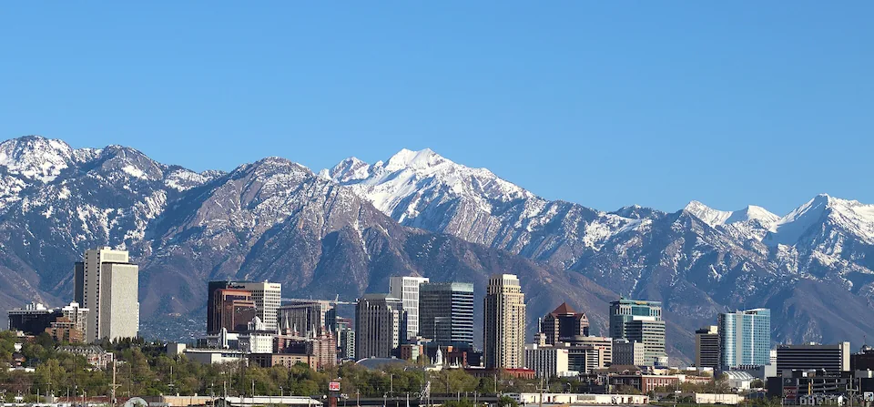

One lovely thing about Salt Lake City is its incredible proximity to outdoor recreation, as the city is nestled right against the Wasatch Mountains, making it easy to access skiing, hiking, and mountain biking just minutes from downtown. his location offers stunning natural scenery and year-round adventures, with the city serving as a gateway to 43 state parks, multiple national forests, and five national parks within a few hours' drive.
The Salt Lake Temple is lovely for its majestic architecture, with its six spires and intricate granite details, and the serene atmosphere of the surrounding Temple Square gardens and reflecting pool. Visitors can appreciate the historical significance of the site, its beautiful landscaping, and the peace it offers, though the temple building itself is not open for tours because it is a sacred space for worship.
